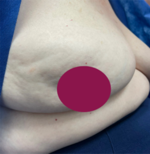

Quais São os Sinais de Alerta?
.webp)
Nódulo (caroço)
Geralmente endurecido, fixo, indolor e com bordas irregulares, palpável na mama ou na axila.

Alterações na pele
Aspecto de "casca de laranja", espessamento, vermelhidão, calor ou retrações (pequenos "afundamentos" ou sulcos).

Mudanças no mamilo
Inversão repentina (mamilo puxado para dentro), dor ou alteração na posição/formato.

Secreção espontânea
Saída de líquido pelo mamilo — especialmente se for clara, transparente ou sanguinolenta, e ocorrer em apenas uma das mamas sem relação com amamentação.

Feridas ou descamação
Lesões, crostas ou coceira persistente na pele da mama ou do mamilo que não cicatrizam.
Inchaço ou assimetria
Aumento de volume em parte ou em toda a mama, ou mudança brusca em seu formato e tamanho.
.jpg)
Gânglios inchados (ínguas)
Presença de caroços ou inchaço na região da axila ou próximo à clavícula.
Dor persistente
Embora a dor na mama (mastalgia) seja comum por causas benignas ou hormonais, dores que não passam, persistem por semanas e não têm relação com o ciclo menstrual devem ser investigadas.

.jpg)